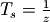
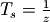
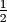

2.1.4. User kernel interpolator¶
2.1.4.1. One can give Sirius his own low-pass filter¶
Because many windowing functions are available, Sirius allows one to set his own kernel. The kernel word is emphasized here as Sirius will not use this input as a window for the sinc interpolator, but as a kernel itself. In other words, one can set the low-pass filter that Sirius will use to cut-off high frequencies.
Note
If the resampling factor is 1, then one can give Sirius a filter that is not an interpolation kernel to simply filter his image. This can be used for stray light correction or denoising applications for example.
Note
In what comes next, the low-pass filter will be referenced as the Sirius filter since, as mentioned in the previous note, it actually does not have to always be a low-pass filter.
2.1.4.2. The Sirius Filter must lie on the spatial domain¶
The filter given to Sirius must lie on the spatial domain. Sirius will then compute its Fourier Transform. This way, if the filter size is less than the one of the upsample original signal, it is spatially zero padded. The spatial zero padding upsamples the filter in frequency domain with a sinc kernel. This leaves Sirius with a low-pass filter having the same number of samples than the upsampled Fourier Transform of the original signal. Sirius can then multiply one by the other before going back to the spatial domain with an inverse Fourier Tranform.
2.1.4.3. The Sirius Filter must be sampled like the upsampled (targeted) signal¶
Because the filter FT is multiplied by the already upsampled signal FT, it has to be sampled accordingly. This means that,
for a  zooming factor, the filter spatial sample rate ought to be defined as .
It is easy to see that using a sinc kernel (rectangular low-pass filter) sampled as the original signal rate
(at integer positions) has no effect at all. Indeed, its FT is a constant function (see figure in Sinus cardinal interpolation as “Fourier Zero Padding”).
zooming factor, the filter spatial sample rate ought to be defined as .
It is easy to see that using a sinc kernel (rectangular low-pass filter) sampled as the original signal rate
(at integer positions) has no effect at all. Indeed, its FT is a constant function (see figure in Sinus cardinal interpolation as “Fourier Zero Padding”).
2.1.4.4. The Sirius Filter is odd and a GDAL supported image format¶
As of today, Sirius assumes the filter is a GDAL support image, has an odd number of samples. Plus, it assumes the filter center is in the middle of it.
2.1.4.5. Sirius auto-shifts the Filter before its FT is computed¶
Sirius assumes the user would have built its filter in the most intuitive representation : centered, starting from negative samples to positive ones. This is how the sinc and lanczos kernel have been plotted so far in this documentation.
Sirius needs to shift the user spatial filter before computing its FT. This is because the FFT implementation Sirius depends on (the libFFTW from [Frigo & Johnson, 2005]) -and the numpy one too for that matter- gives back an array which first frequency is the null frequency, and the following ones are the positive then the negative ones (both in increasing order).
In the case of a sinc kernel, its FT is a rectangular signal. The following example shows that if the sinc kernel samples are not shifted prior to computing its FT, then its FT is not a rectangular signal. In other words, knowing the FFT implementation convention, one wishes to obtain a shifted rectangular signal when computing the FT of its sinc kernel. Since the inverse FT of a shifted rectangular signal is not a sinc kernel (but a shifted sinc kernel), it is a shifted sinc kernel that one has to use in order to get a shifted rectangular signal back from FT computation.
In [1]: frequencies = np.concatenate((np.arange(0,(x.size-1)/4+0.5,.5), np.arange(-(x.size-1)/4, 0, .5)))
In [2]: plt.title('The convention for samples sequence of FFT implementation.\n The input kernel must be shifted');
In [3]: plt.xticks(np.arange(0,sinc_kernel.size,20),frequencies[::20]);
In [4]: plt.xlabel('frequencies');
In [5]: plt.plot(np.fft.fft(sinc_kernel), label='the output of FT computation for a centered sinc kernel');
In [6]: plt.plot(np.fft.fft(np.fft.ifftshift(sinc_kernel)), label='the output of FT computation for a shifted sinc kernel');plt.legend()
Out[6]: <matplotlib.legend.Legend at 0x7f055c12d1d0>
2.1.4.6. Sirius can normalize the Filter¶
It is easy to see that the sinc_kernel and the lanczos_kernel defined above do not have a total weights sum equal to 1. Indeed, both of them were upsampled by a factor 2 so they can be used to zoom by 2 the original rectangular signal. Hence, these kernels are actually a combination of two kernels each. One that is used to convolve for integer positions (original data). And a second one used for fractional positions (half-pixel positions). Then, both kernels (integer and fractional positions) do have a total weights sum equal to 1.
When using the upsampled sinc_kernel (or the lanczos one) in frequency domain, this implies an energy gain. To avoid this, the sinc_kernel must be normalized as one global kernel, meaning that if it contains two sub-kernels (say for integer and half-pixel positions), those sub-kernels weights sum must equal .
# compute the rect FT and zero padds it
In [7]: fft_rect_zpd = fft1D_zero_pad(np.fft.fft(rect), zoom_factor=2)
# compute the sinc FT (with as many samples as the rect signal for simplicity here
In [8]: fft_sinc_kernel = np.fft.fft(np.fft.ifftshift(sinc_kernel[0:sinc_kernel.size-1]))
# multiply the rect FT by the sinc FT low-pass filter and FT-1
In [9]: rect_upsampled_by_zpd_and_sinc_lowpassfiltered = np.fft.ifft(fft_sinc_kernel*fft_rect_zpd)
In [10]: plt.title('Rect signal upsample with sinc low pass filter. \n The filter must be normalized as one unique kernel.')
Out[10]: Text(0.5,1,'Rect signal upsample with sinc low pass filter. \n The filter must be normalized as one unique kernel.')
In [11]: plt.plot(rect_upsampled_by_zpd_and_sinc_lowpassfiltered, label='Zero Padding with FT(sinc) low-pass filter')
Out[11]: [<matplotlib.lines.Line2D at 0x7f055c1659d0>]
# same but with a sinc kernel normalized as one unique kernel
In [12]: sinc_kernel_normalized = np.ones(sinc_kernel.size)*sinc_kernel
In [13]: sinc_kernel_normalized[0::2] /= (np.sum(sinc_kernel_normalized[0::2])/0.5)
In [14]: sinc_kernel_normalized[1::2] /= (np.sum(sinc_kernel_normalized[1::2])/0.5)
In [15]: fft_sinc_kernel_normalized = np.fft.fft(np.fft.ifftshift(sinc_kernel_normalized[0:sinc_kernel_normalized.size-1]))
In [16]: rect_upsampled_by_zpd_and_sinc_lowpassfiltered = np.fft.ifft(fft_sinc_kernel_normalized*fft_rect_zpd)
In [17]: plt.plot(rect_upsampled_by_zpd_and_sinc_lowpassfiltered, label='Zero Padding with FT(sinc) low-pass filter normalized'); plt.legend()
Out[17]: <matplotlib.legend.Legend at 0x7f055c165d90>
In [18]: plt.plot(np.arange(0,rect_zoomed_by_sinc_conv.size,2), rect, '.', label='original samples');plt.legend();
Note
The normalization is not performed by default. This is because one might have given Sirius a filter that is not for interpolation purpose.
2.1.4.7. When Sirius uses a Filter to upsample, the spectrum is periodized instead of zero padded¶
We have shown above how low-pass filtering with a Lanczos FT can improve the upsampling of a discontinuous signal such as the rectangular signal. This has been shown with spatial convolution and tested against the use of a sinc kernel.
However, in frequencial domain, if we are to upsample a signal by a factor 2 with zero padding, and then apply a lanczos low-pass filter to it to reduce the ringings on the output upsampled signal, this gives us more oscillations than what we had using spatial convolution with the same lanczos kernel :
In [19]: lanczos_kernel_normalized=np.ones(lanczos_kernel.size)*lanczos_kernel
In [20]: lanczos_kernel_normalized[0::2]/=(np.sum(lanczos_kernel_normalized[0::2])/0.5)
In [21]: lanczos_kernel_normalized[1::2]/=(np.sum(lanczos_kernel_normalized[1::2])/0.5)
In [22]: fft_lanczos_kernel_normalized=np.fft.fft(np.fft.ifftshift(lanczos_kernel_normalized[0:lanczos_kernel_normalized.size-1]))
In [23]: rect_upsampled_by_zpd_and_lanczos_lowpassfiltered = np.fft.ifft(fft_lanczos_kernel_normalized*fft_rect_zpd)
In [24]: plt.title('Fourier zpd then low-pass filtered : sinc vs lanczos. \nThe lanczos results is not as good as spatial convolution');
In [25]: plt.plot(rect_upsampled_by_zpd_and_sinc_lowpassfiltered, label='Zero Padding with FT(sinc) low-pass filter normalized'); plt.legend()
Out[25]: <matplotlib.legend.Legend at 0x7f055c210e50>
In [26]: plt.plot(rect_upsampled_by_zpd_and_lanczos_lowpassfiltered, label='Zero Padding with FT(lanczos) low-pass filter normalized'); plt.legend()
Out[26]: <matplotlib.legend.Legend at 0x7f055c282ed0>
In [27]: plt.plot(rect_zoomed_by_lanczos_kernel_conv,label='Spatial convolution with lanczos kernel');plt.legend();
This is because when we upsample the input signal FT with zero padding, and multiply it with the lanczos low-pass filter, we are actually using a low-pass filter that is the product of sinc low-pass filter and the lanczos one. In spatial domain, this is like convolving the input signal (our rectangular discontinuous signal) with a sinc kernel convolved with a lanczos one. Knowing this, we can reproduce the same behavior in spatial domain using a kernel that is the convolution of the sinc and lanczos ones.
In [28]: lanczos_kernel_conv_sinc = np.convolve(lanczos_kernel,sinc_kernel,mode='same')
In [29]: lanczos_kernel_conv_sinc[0::2]/=np.sum(lanczos_kernel_conv_sinc[0::2])
In [30]: lanczos_kernel_conv_sinc[1::2]/=np.sum(lanczos_kernel_conv_sinc[1::2])
In [31]: plt.title('Sinc kernel and Lanczos kernel convolved together.');
In [32]: plt.plot(x, lanczos_kernel_conv_sinc, label='The lanczos kernel convolved with a sinc one');plt.legend();
In [33]: rect_zoomed_by_lanczos_conv_sinc_kernel_conv = np.zeros(rect.size * 2)
In [34]: rect_zoomed_by_lanczos_conv_sinc_kernel_conv[0::2] = np.convolve(rect_odd, lanczos_kernel_conv_sinc[0::2], mode='same')[0:rect_odd.size-1]
In [35]: rect_zoomed_by_lanczos_conv_sinc_kernel_conv[1::2] = np.convolve(rect_odd, lanczos_kernel_conv_sinc[1::2], mode='same')[1:1+rect_odd.size-1]
In [36]: plt.title('Spatial convolution equivalent to the\n Fourier zpd upsampling filtered by FT(lanczos)')
Out[36]: Text(0.5,1,'Spatial convolution equivalent to the\n Fourier zpd upsampling filtered by FT(lanczos)')
In [37]: plt.plot(rect_zoomed_by_lanczos_kernel_conv,label='rect signal spatially upsampled by lanczos kernel')
Out[37]: [<matplotlib.lines.Line2D at 0x7f055c64f150>]
In [38]: plt.plot(rect_zoomed_by_lanczos_conv_sinc_kernel_conv,label='same but the lanczos kernel was convolved with a sinc one');plt.legend();
To overcome this issue, instead of upsampling the signal FT with zero padding, when the user sets his own kernel interpolator, Sirius periodizes the spectrum to upsample it.
Warning
It is important to notice that, if the low-pass filter presents high frequencies waves (and so is not that good of a low-pass filter), then the periodized frequencies located at the waves pick will remain.
In [39]: fft_rect_perdiozed = fft1D_periodization(np.fft.fft(rect), zoom_factor=2)
In [40]: rect_upsampled_by_perdiodization_and_sinc_lowpassfilter = np.fft.ifft(fft_sinc_kernel_normalized * fft_rect_perdiozed)
In [41]: rect_upsampled_by_perdiodization_and_lanczos_lowpassfilter = np.fft.ifft(fft_lanczos_kernel_normalized * fft_rect_perdiozed)
In [42]: plt.plot(rect_upsampled_by_perdiodization_and_sinc_lowpassfilter, label='rect signal upsampled by periodization with FT(sinc) low-pass filter');
In [43]: plt.plot(rect_upsampled_by_perdiodization_and_lanczos_lowpassfilter,label='rect signal upsampled by periodization with FT(lanczos) low-pass filter');plt.legend();